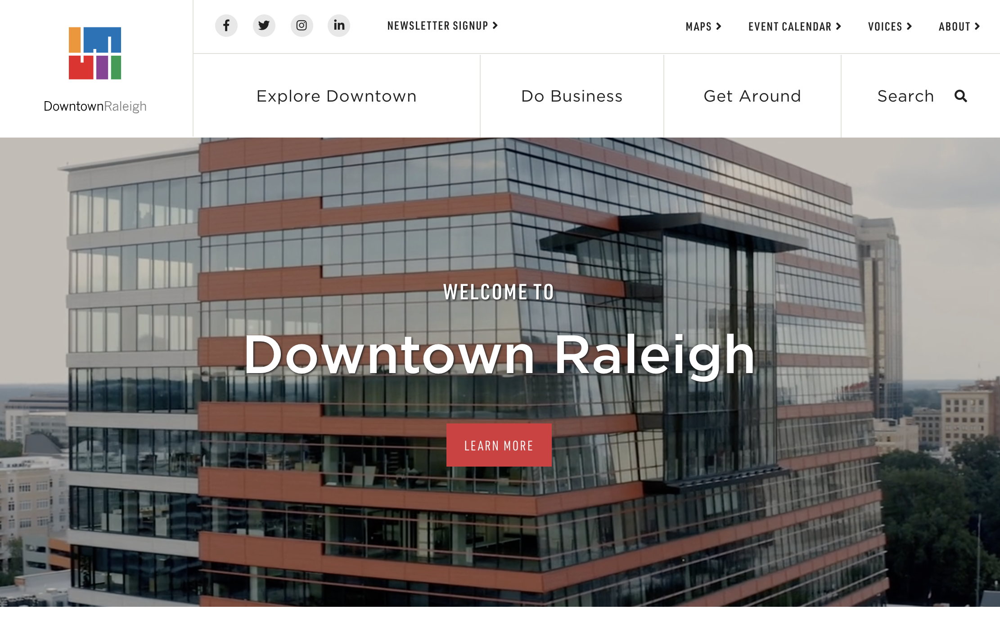

Projects
Lazy River Nursery and Garden Supply

Website built for Lazy River Nursery and Garden Supply. The site was create during my enrollment at Momentum. View project on GitHub.
Downtown Raleigh website

In 2018, I led UX efforts when redesigning the website for Downtown Raleigh. Throughout the project, I also assisted in content creation and some front-end web development to build out pages and forms. Check out my work on the UX portion of the project